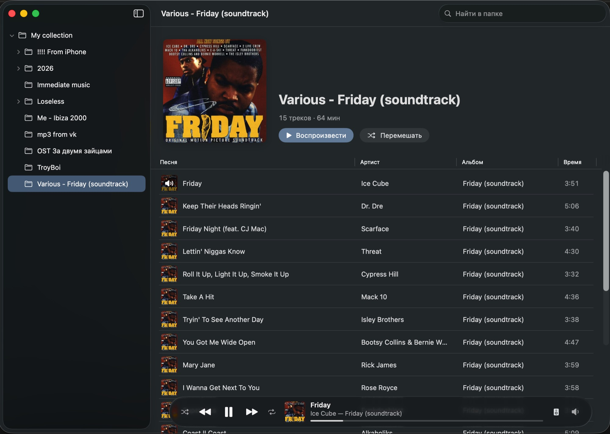

A lightweight macOS music player that plays straight from your folders
Open a folder and listen — no import, no library. Siply stands for Simple Player.

Features
Folders instead of a library
Folder tree on the left, tracks on the right. Nothing is imported or indexed.
Music to the speaker, system sounds to the Mac
Its own output device, for music only. If the speaker disconnects, Siply keeps playing and moves back when it returns.
Opens from Finder
Double-click an audio file: its folder opens in Siply, the track plays, the rest follow.
Everything macOS plays
MP3, AAC/M4A, FLAC, WAV, AIFF and CAF — lossless included.
Tags and artwork
Titles, artists, albums and covers come from file tags. Legacy Windows-1251 ID3 tags show up as proper Cyrillic.
A familiar interface
Album header with Play and Shuffle, a track table, a Liquid Glass player bar — like Apple Music.
Keyboard and media keys
Space pauses, Enter plays. Media keys and Control Center work.
Small and native
Swift, SwiftUI and AVFoundation. Zero third-party dependencies.
Install
- 1Download Siply with the button above.
- 2Open the disk image and drag Siply to Applications.
- 3Launch Siply and pick your music folder.
- 4Want to open files with a double-click? In Finder: file → Get Info (⌘I) → Open with → Siply → Change All.